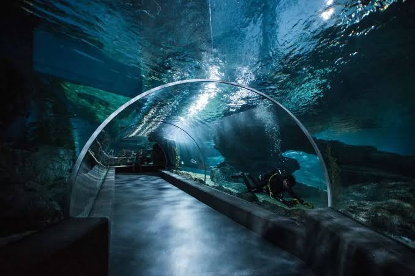
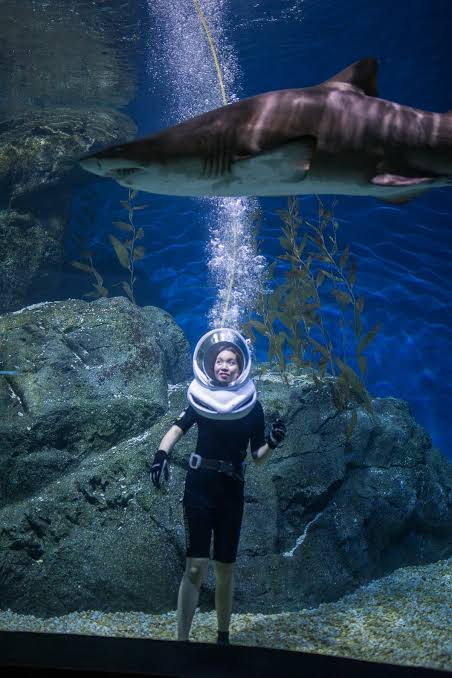
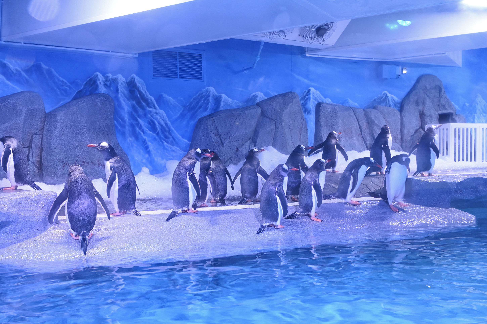
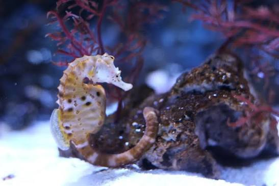
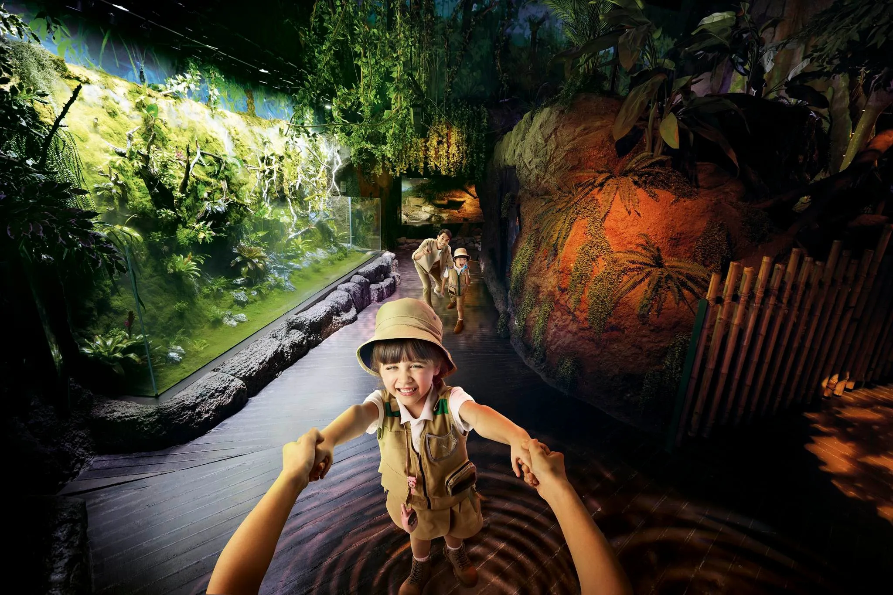
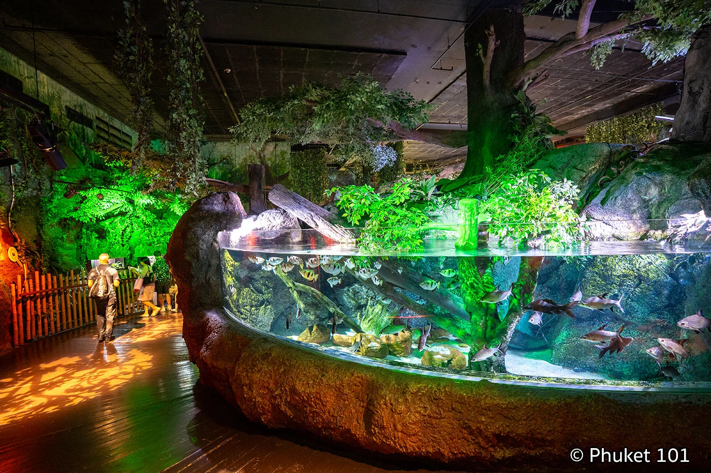

SEA LIFE Bangkok Ocean World

SEA LIFE Bangkok Ocean World — огромный океанариум в самом центре Бангкока, расположенный на нижних этажах торгового центра Siam Paragon. Это один из крупнейших океанариумов Юго-Восточной Азии, где можно увидеть сотни видов морских и пресноводных животных.
Здесь можно пройти через подводный тоннель среди акул и скатов, увидеть пингвинов, морских коньков, медуз и тропических рыб, а также посетить зоны, посвящённые тропическому лесу и различным подводным экосистемам. SEA LIFE Bangkok хорошо подходит как для семейного посещения, так и для обычной прогулки в Бангкоке. На осмотр океанариума обычно стоит закладывать около 1,5–2 часов.
Подводный тоннель Ocean Tunnel
Ocean Tunnel — одна из главных достопримечательностей SEA LIFE Bangkok. Посетители проходят по прозрачному тоннелю внутри огромного аквариума, наблюдая за морскими животными практически со всех сторон.
Над головой и рядом с посетителями проплывают акулы, скаты и большие стаи рыб. Благодаря конструкции тоннеля создаётся ощущение, будто ты находишься непосредственно на дне океана.

Именно Ocean Tunnel официальный сайт SEA LIFE называет одной из главных достопримечательностей океанариума.
Shark Walk
Shark Walk — необычная зона, где посетители проходят по прозрачной поверхности над аквариумом с акулами. Под ногами можно увидеть несколько видов акул, а интерактивные экраны рассказывают об их поведении, среде обитания и роли в экосистеме.

Всего в зоне можно увидеть пять различных видов акул.
Пингвины
В SEA LIFE Bangkok есть специальная зона Penguin Ice Playground, оформленная в стиле холодного антарктического пространства. Здесь живут дженту-пингвины, за которыми можно наблюдать во время плавания, кормления и прогулок по территории.

Кормление дженту-пингвинов проводится ежедневно в 12:30 и 16:00 и входит в стоимость обычного входного билета.
Морские коньки
В зоне Seahorse Kingdom можно познакомиться с различными видами морских коньков и узнать больше об этих необычных животных. Морские коньки используют свой характерный хвост, чтобы цепляться за растения и другие объекты под водой. За их поведением особенно интересно наблюдать через специальные аквариумы с близким обзором.

Медузы
Отдельная зона посвящена медузам. Их прозрачные тела, плавные движения и подсветка аквариумов создают особенно необычную атмосферу. Это одна из наиболее фотогеничных частей океанариума. Медузы медленно перемещаются в воде, а подсветка позволяет хорошо рассмотреть их форму и движение.
Тропический лес
Rainforest Adventure переносит посетителей из подводного мира в атмосферу влажного тропического леса. Здесь можно увидеть пресноводных животных, рептилий, земноводных и других обитателей тропических экосистем. Оформление зоны включает элементы настоящего тропического леса, благодаря чему она заметно отличается от классических морских аквариумов.

Коралловые рифы
В зоне Coral Reefs можно увидеть ярких тропических рыб и кораллы, напоминающие настоящую подводную экосистему. Здесь особенно много небольших разноцветных рыб, которые перемещаются большими группами между кораллами и другими элементами аквариума.

Кормления и шоу
В течение дня в океанариуме проходят различные кормления животных и познавательные выступления. Это позволяет не просто посмотреть на животных, но и узнать больше об их поведении.
Например, кормление акул проходит по вторникам, четвергам, субботам и воскресеньям в 13:30. Кормление скатов проходит по понедельникам, средам, пятницам и воскресеньям в 13:30. Также каждый день проходят кормления выдр и пингвинов. Расписание лучше проверить непосредственно перед посещением, поскольку время отдельных мероприятий может меняться.
Что ещё можно сделать
Помимо обычного маршрута по аквариуму, SEA LIFE предлагает дополнительные развлечения. В зависимости от выбранного билета можно посетить 4D-кинотеатр, прокатиться на Glass Bottom Boat и воспользоваться другими дополнительными активностями. Некоторые из этих развлечений оплачиваются отдельно или входят только в специальные комбинированные билеты.
Что запомнить
SEA LIFE Bangkok Ocean World — отличный вариант, если хочется увидеть подводный мир, не выезжая из центра Бангкока. Главные впечатления здесь — огромный Ocean Tunnel, акулы, скаты, пингвины, медузы, морские коньки и тропическая зона. Благодаря расположению внутри Siam Paragon сюда легко добраться на BTS, а само посещение удобно совместить с прогулкой по центральному Бангкоку. Если хочется увидеть как можно больше, лучше прийти днём и заранее посмотреть расписание кормлений.